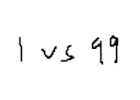
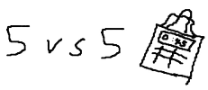

Phasmophobia
Phasmophobia is a single player/co-op game that can go up to 4 players per lobby. In this game, you are a paranormal investigator who goes to houses to find paranormal activities and check clues on which type of ghost is living within the area. You must find evidence of such ghost and document clues that you have found to pinpoint the exact ghost.

source: Official Phasmophobia
Dead by Daylight
Dead by Daylight is a online multiplayer game where there will be 4 survivors and 1 hunter. The survivor will spawn into the map and must turn on 4 generators to power on a gate that will grant them access to escape the map all the while avoiding getting captured from the hunter. The hunter must find and prevent the survivors from escaping by capturing them as you roam around the map. The hunter can also sabotage the survivors generator progress.

source: IGN Review
Resident Evil 2
Resident Evil 2 is part of the Resident Evil series. In Resident Evil 2, you are playing as Leon S. Kennedy, a rookie cop who is on his way to his first day at work at Racoon City. However, things take turn for the worst as you are surrounded by zombies infected with the T Virus. You are informed that Racoon City will be bombed because of the spread of the T Virus, you must find a way to escape before its too late.

source: Official Resident Evil 2